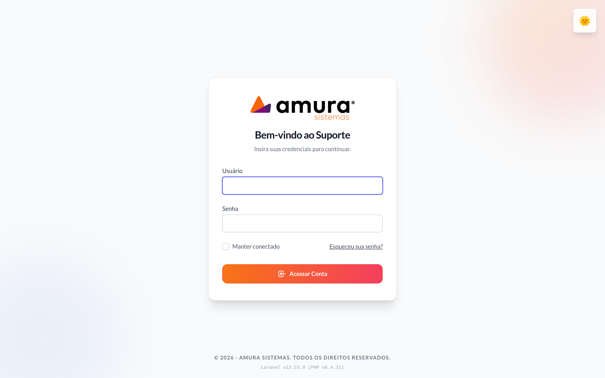
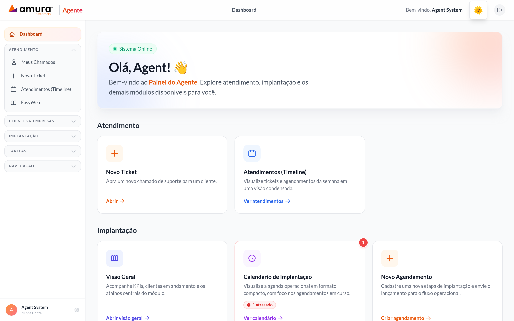
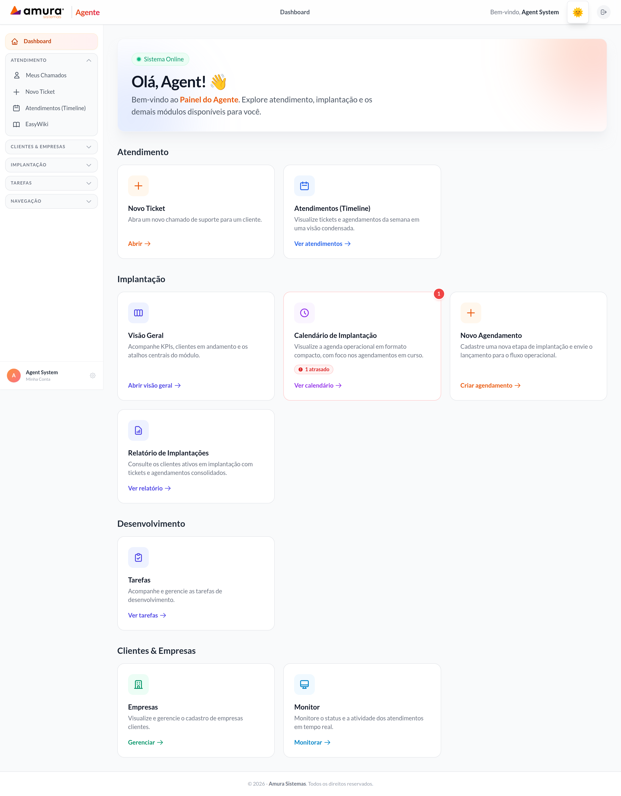
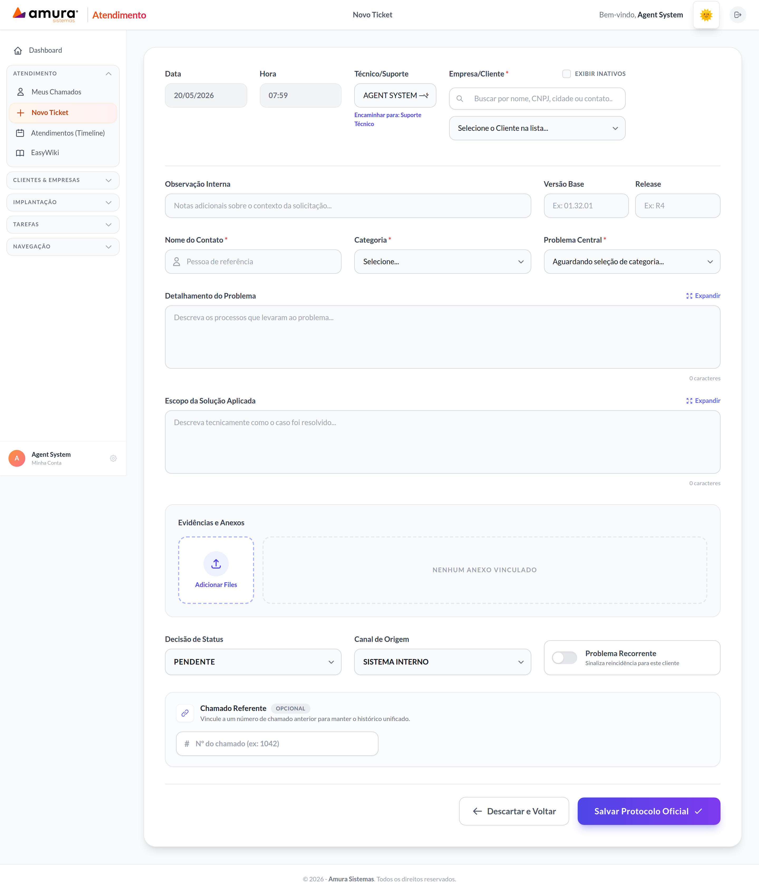
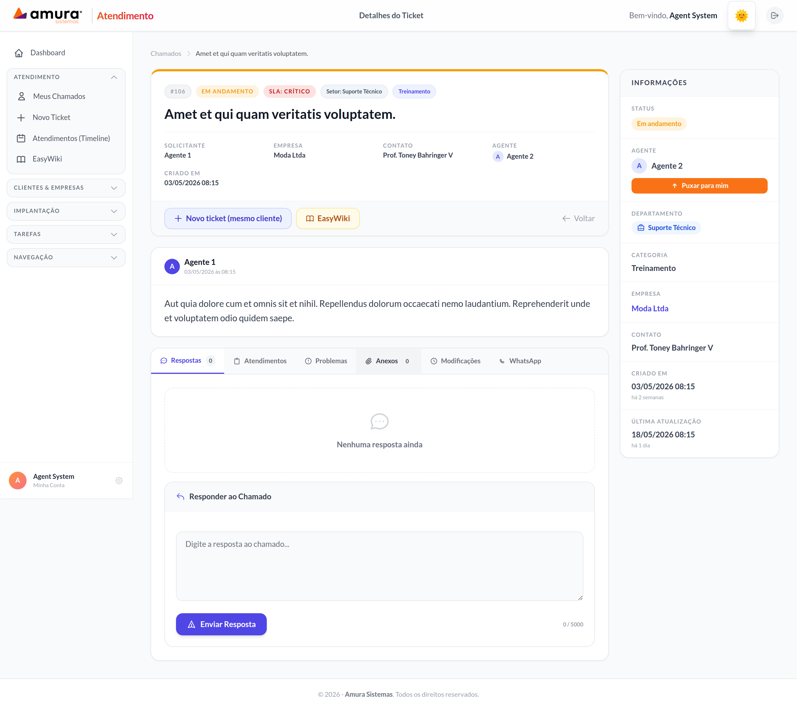

O Sistema de Suporte da Amura Sistemas é uma plataforma centralizada para
gerenciar todo o ciclo de atendimento ao cliente: desde a abertura do chamado e
o registro técnico, passando pelas agendas de implantação e relatórios de atendimento (RAT),
até a comunicação por WhatsApp e a pesquisa de satisfação via CRM.
A plataforma reúne, em um só lugar, as ferramentas que antes ficavam espalhadas em
e-mails, planilhas e mensagens avulsas. O resultado é mais agilidade para o atendente,
mais visibilidade para o gestor e mais transparência para o cliente final.
ℹ️ Informação
Este manual cobre as três áreas internas do sistema: Painel do Atendente,
Painel Administrativo e CRM.
Você pode pular diretamente para a seção que mais se aplica ao seu perfil pelo sumário.
1.2 Público-alvo
O sistema atende, no mínimo, quatro perfis distintos:
Atendente (Suporte/Técnico): responsável por abrir, registrar, atender e fechar chamados.
Administrador: configura usuários, categorias, prioridades, SLA, módulos, integrações e relatórios.
Equipe comercial / CRM: registra feedbacks, retornos e contatos com clientes.
Cliente final: abre chamados pelo WhatsApp e acompanha o andamento do atendimento.
1.3 O que você vai aprender
Ao final deste manual você será capaz de:
Entrar no sistema, recuperar sua senha e personalizar sua conta.
Abrir, atender e encerrar chamados com toda a riqueza de informação que o sistema permite (múltiplas categorias, problemas, anexos, auditoria, recorrência e referências cruzadas).
Registrar atendimentos por diferentes canais (telefone, e-mail, presencial, WhatsApp) e registrar Relatórios de Atendimento (RAT).
Consultar e gerenciar empresas clientes, contatos e módulos contratados (o cadastro de novas empresas é feito pelo time financeiro).
Conduzir o processo de implantação com agendamentos, checklists e relatórios de progresso.
Configurar o sistema do ponto de vista administrativo (categorias, prioridades, SLA, integração WhatsApp).
Operar o CRM de feedback de clientes.
Orientar seus clientes finais sobre a abertura de chamados pelo WhatsApp.
💡 Dica
Os elementos visuais do sistema (cores de status, ícones, posicionamento dos botões)
podem variar ligeiramente conforme o tema (claro/escuro) e o perfil de acesso.
As etapas funcionais, no entanto, são sempre as mesmas e seguem o que está descrito aqui.
Capítulo 2
Requisitos e primeiro acesso
2.1 Navegadores suportados
O sistema é totalmente baseado na web. Você só precisa de um navegador atualizado e
de uma conexão estável de internet. Recomendamos:
Navegador
Versão mínima
Observações
Google Chrome
120+
Recomendado para todos os perfis.
Microsoft Edge
120+
Plenamente compatível.
Mozilla Firefox
115+
Plenamente compatível.
Safari
16+
Compatível no macOS e iPadOS.
⚠️ Atenção
Navegadores fora de suporte do fabricante (como o Internet Explorer) não são compatíveis.
Sempre mantenha o seu navegador atualizado para garantir desempenho e segurança.
2.2 Login no sistema
Para acessar o sistema, você precisa do endereço web informado pela Amura, do seu usuário (e-mail) e da senha.
Abra o navegador e acesse o endereço enviado pela equipe Amura (ex.: https://suporte.suaempresa.com.br).
Na tela Bem-vindo ao Suporte, informe o seu Usuário (e-mail) e a Senha.
Se quiser ficar conectado mesmo após fechar o navegador, marque Manter conectado.
Clique em Acessar Conta.

Tela de login: logo Amura, campos de Usuário e Senha, opção "Manter conectado",
link "Esqueceu sua senha?" e o botão "Acessar Conta".
ℹ️ Informação
Administradores acessam o sistema pelo endereço /admin (ex.: https://suporte.suaempresa.com.br/admin),
com a mesma estrutura de tela mas o cabeçalho indica "Acesso Restrito".
2.3 Primeiro acesso e troca obrigatória de senha
No seu primeiro acesso, o sistema vai pedir que você troque a senha temporária por uma de sua escolha.
Essa exigência protege a sua conta contra acessos não autorizados.
Faça login com a senha temporária recebida por e-mail.
Você será redirecionado para a tela Troca de senha obrigatória.
Em Nova senha, informe uma senha com, no mínimo, 8 caracteres.
Em Confirmar nova senha, digite novamente para confirmar.
Clique em Salvar nova senha. Você será encaminhado para a sua área padrão.
💡 Dica de segurança
Use senhas com pelo menos 12 caracteres, combinando letras maiúsculas, minúsculas, números e símbolos.
Não compartilhe sua senha com colegas; cada pessoa deve ter o próprio usuário.
2.4 Recuperação de senha
Se você esqueceu sua senha, é possível solicitar um link de redefinição em poucos passos:
Na tela de login, clique em Esqueceu sua senha?.
Informe o e-mail cadastrado no sistema e clique em Link de Redefinição de Senha por E-mail.
Verifique sua caixa de entrada (e a pasta de spam, se necessário). Você vai receber um e-mail com um link de redefinição.
Clique no link recebido — ele abrirá a tela para definir uma nova senha.
Digite a nova senha, confirme e clique em Redefinir Senha. Pronto: você já pode entrar com a senha nova.
⚠️ Atenção
O link de redefinição tem validade limitada (em geral, 60 minutos). Se ele expirar, basta repetir o processo.
Por segurança, o sistema também limita o número de tentativas de redefinição em um curto intervalo de tempo.
Capítulo 3
Visão geral da interface
3.1 Os perfis de uso
O sistema reúne painéis internos, cada um pensado para um perfil específico de usuário.
A tela que você vê após o login depende do seu perfil. A organização lógica é a seguinte:
Painel
Quem usa
O que você faz lá
Atendente
Suporte técnico, analistas, implantadores
Abrir e atender chamados, registrar atendimentos, gerar RAT, gerenciar conhecimento e empresas.
Administrador
Coordenadores e gestores
Configurar usuários, categorias, prioridades, SLA, módulos, WhatsApp e CRM.
CRM
Equipe comercial
Cadastrar feedbacks por cliente, registrar retornos e acompanhar histórico.
3.2 Menu lateral e cabeçalho
A interface dos painéis internos segue um padrão consistente: um menu lateral à esquerda
com os módulos disponíveis, um cabeçalho superior com saudação
e atalhos para a sua conta, e a área central, onde o conteúdo é exibido.
Logo Amura — no topo do menu, sempre leva à tela inicial do painel.
Itens do menu — agrupados por área (Atendimento, Clientes & Empresas, Implantação e Tarefas).
Saudação — exibe o seu primeiro nome no canto direito do cabeçalho.
Menu da conta — acesso à sua página de conta e ao botão de sair (logout).

Layout geral do painel: menu lateral à esquerda, cabeçalho superior com saudação e
atalhos da conta, e a área central com o conteúdo do módulo selecionado.
3.3 Notificações e indicadores
Vários itens do menu exibem pequenas etiquetas coloridas (badges) indicando
o número de pendências (chamados atrasados, agendamentos do dia, tarefas novas, mensagens não lidas).
Use-as como sinal para priorizar seu trabalho.
VermelhoItens atrasados ou vencidos — atenção imediata.
ÂmbarItens previstos para hoje.
Roxo / AzulPróximos da agenda e novas notificações.
VerdeSucesso, conclusão ou status saudável.
Capítulo 4
Painel do Atendente
O painel do atendente é o coração operacional do sistema. É aqui que você abre chamados,
registra atendimentos, gerencia clientes, agenda implantações, gera RAT, consulta a base
de conhecimento e monitora a fila do dia.
4.1 Dashboard do atendente
Objetivo: oferecer uma visão de alto nível das suas atividades do dia, com atalhos para os módulos mais usados e indicadores de pendência.
Como acessar:
Menu lateral → ícone Início (ou clique no logo Amura)
O dashboard é organizado em cards agrupados por área:
Atendimento — Novo Ticket, Atendimentos (timeline da semana).
Implantação — Visão Geral, Calendário, Novo Agendamento, Relatório de Implantações.
Desenvolvimento — Tarefas, com badges de itens novos, parados e para hoje.
Clientes & Empresas — Gerenciar empresas e Monitor.
Cada card pode exibir uma etiqueta numérica no canto superior direito
indicando pendências (ex.: 3 agendamentos atrasados). Clique no card para entrar no módulo.

Dashboard do atendente: cards agrupados por área (Atendimento, Implantação,
Desenvolvimento, Clientes & Empresas) com badges de pendência e saudação personalizada.
4.2 Chamados (Tickets)
Os chamados são o registro central de toda demanda de suporte.
Eles guardam histórico, anexos, atendimentos, problemas, soluções e relação com outros chamados.
Esta seção é dividida em sete passos: listagem, criação, edição, captura, atendimentos,
anexos e fechamento.
4.2.1 Listagem e filtros de chamados
Objetivo: encontrar rapidamente os chamados em andamento, atribuídos a você ou disponíveis na fila.
Como acessar:
Menu lateral → Atendimento → Chamados
Clique em Chamados no menu lateral para ver todos os chamados, ou em Meus chamados para apenas os atribuídos a você.
Use o campo Buscar chamado… para localizar por número, empresa, contato ou palavra-chave do título.
Aplique filtros pelos cartões laterais: status, prioridade, departamento e período.
Clique sobre qualquer linha para abrir o chamado em detalhe.
💡 Dica
Você pode pré-configurar, em Minha conta, se os chamados devem abrir em
nova aba e se a categoria deve ser exibida diretamente na lista — útil quando você
gerencia muitos chamados simultâneos.
4.2.2 Abrindo um novo chamado
Objetivo: registrar uma nova demanda de suporte com todos os dados necessários para que o atendimento seja rastreável.
Como acessar:
Menu lateral → Atendimento → Novo Chamado (ou cartão "Novo Ticket" do dashboard)
O formulário de criação é dividido em cinco blocos, do mais geral para o mais específico.
Cada bloco está organizado para que você preencha de cima para baixo, sem precisar voltar.
Bloco 1 — Metadados iniciais
Data e Hora são preenchidas automaticamente com o momento atual.
Em Setor selecione o departamento responsável pelo chamado (ex.: Suporte, Comercial).
Em Técnico/Suporte, escolha o atendente que assumirá o chamado — ou deixe em branco para colocar na fila.
Em Empresa/Cliente, busque o cliente por nome, CNPJ, cidade ou contato; o sistema lista resultados conforme você digita.
Bloco 2 — Informações do sistema e contexto técnico
Em Observação interna, adicione notas que ajudem o atendente (ex.: "cliente já tentou reiniciar serviço").
Preencha a Versão Base (ex.: 01.32.01) e a Release (ex.: R4) do software do cliente, se aplicáveis.
Informe o Nome do contato (pessoa de referência para retorno).
Em Categoria, selecione a categoria principal; em seguida o sistema carrega as subcategorias em Problema central.
Bloco 3 — Detalhamento do problema e solução
No campo Detalhamento do problema, descreva o que está ocorrendo. Use o botão de expandir para abrir um editor maior.
No campo Escopo da solução aplicada, registre o que já foi feito ou o que se pretende fazer.
Bloco 4 — Evidências e anexos
Clique no botão de anexar arquivos ou arraste arquivos para a área indicada.
Anexe imagens, PDFs, planilhas ou áudios. É possível anexar múltiplos arquivos de uma vez.
Para remover um anexo, passe o mouse sobre ele e clique no ícone de excluir.
ℹ️ Informação
Cada anexo é armazenado de forma segura e fica disponível apenas para usuários autenticados.
Você pode também colar imagens com Ctrl+V diretamente nos campos de texto.
Bloco 5 — Finalização (status, canal e flags)
Em Decisão de status, escolha o estado inicial do chamado (Aberto, Em andamento, Solicitação, Resolvido).
Em Canal de origem, registre como o chamado chegou (Telefone, E-mail, Presencial, WhatsApp, Portal).
Marque Recorrente se este chamado representa um problema repetitivo do cliente.
Em Chamado referente, informe o nº de outro chamado se este for um desdobramento de um caso anterior.
Clique em Salvar chamado. O sistema cria o registro, gera o número do chamado e abre a tela de detalhes.
⚠️ Atenção
Empresas com pendências financeiras podem ter o botão de salvar bloqueado automaticamente,
para preservar a política comercial. Nesses casos, fale com a coordenação antes de prosseguir.

Formulário de novo chamado com os cinco blocos: metadados iniciais, contexto técnico,
detalhamento e solução, evidências/anexos e finalização (status, canal e flags).
4.2.3 Captura e liberação de chamados
Objetivo: assumir oficialmente a responsabilidade por um chamado da fila (ou liberá-lo de volta).
Chamados sem técnico definido ficam disponíveis na fila do setor. Você pode capturar
um chamado para si — passando a ser o responsável visível pelo atendimento — ou
liberá-lo de volta caso não consiga atender.
Abra o chamado pela listagem.
Clique no botão Puxar para mim. O técnico passa a ser você.
Para liberar, abra o chamado já capturado e clique em Devolver para a fila — ele retorna à fila de pendências.
4.2.4 Tela de detalhe do chamado
Objetivo: centralizar todas as ferramentas de atendimento em uma única tela.
Ao abrir um chamado, a tela exibe, da esquerda para a direita / de cima para baixo:
Cabeçalho com número, título, etiquetas (Recorrente, WhatsApp, Resolvido) e botões de ação rápida — Editar (a opção Excluir aparece apenas para administradores).
Aba "Respostas" — respostas publicadas ao cliente, sincronizadas no histórico do chamado.
Aba "Atendimentos" — onde você cria os atendimentos e comentários internos.
Aba "Anexos" — todos os arquivos vinculados ao chamado.
Aba "Modificações" — histórico automático de todas as alterações (auditoria).
Aba "WhatsApp" — quando habilitada, é a última aba; lista a conversa com o cliente e permite enviar mensagens.
Painel de Problemas — múltiplos problemas dentro do mesmo chamado.
Coluna lateral "Informações" — dados do cliente, status, prioridade, origem, contato e categoria.

Tela de detalhe do chamado: cabeçalho com número e etiquetas, abas de Respostas,
Atendimentos, Anexos, Modificações e WhatsApp, o painel de Problemas e a coluna lateral "Informações".
4.2.5 Registrar um atendimento
Objetivo: documentar cada interação com o cliente (telefone, e-mail, presencial) dentro do chamado.
Dentro do chamado, vá à aba Atendimentos.
Selecione o Canal do atendimento (Telefone, E-mail, Presencial, WhatsApp).
Descreva no campo de texto o que foi tratado.
Clique em Registrar atendimento. Ele passa a fazer parte do histórico do chamado.
É possível filtrar a lista de atendimentos por canal, período ou texto da descrição.
Também há um histórico de retornos: cada vez que o chamado volta para um novo atendimento,
o sistema registra automaticamente quem foi o responsável e quando.
💡 Dica
Mesmo atendimentos curtos ("ligou para confirmar resolução") devem ser registrados — isso
constrói um histórico confiável que ajuda em revisões internas e em renegociações comerciais.
4.2.6 Múltiplos problemas no mesmo chamado
Objetivo: tratar, num único chamado, vários problemas relacionados, cada um com sua descrição e solução.
No painel Problemas, clique em + Novo problema.
Preencha o Título (obrigatório) e, se desejar, a Descrição detalhada.
Clique em Adicionar. O problema aparece na lista do chamado.
Para registrar a solução de um problema, clique em Resolver, descreva como foi resolvido e confirme.
Cada problema tem o seu próprio estado (em aberto / resolvido) e sua solução fica registrada para consulta futura.
4.2.7 Anexos no chamado
Objetivo: manter todos os documentos, evidências e capturas relacionadas ao chamado em um só lugar.
No painel Anexos, arraste arquivos para a área indicada ou clique no botão para selecioná-los.
Aguarde o envio — uma barra de progresso aparece para cada arquivo.
Para visualizar, clique no anexo. Imagens abrem em preview, demais formatos baixam.
Para remover, clique no ícone de excluir e confirme.
⚠️ Atenção
Não anexe arquivos com dados sensíveis (senhas, cartões, documentos pessoais) sem necessidade
e sem autorização do cliente. O sistema aplica permissões de acesso, mas a boa prática é
sempre minimizar o armazenamento de dados sensíveis.
4.2.8 Histórico de alterações (aba Modificações)
Objetivo: ter rastreabilidade completa do que mudou no chamado, por quem e quando.
Toda alteração relevante (mudança de status, troca de técnico, edição de campos, captura/liberação)
é registrada automaticamente. Para consultar:
Abra o chamado.
Abra a aba Modificações.
Veja a linha do tempo com data/hora, usuário responsável e descrição da mudança.
4.2.9 Conversa de WhatsApp no chamado
Objetivo: conversar com o cliente diretamente pelo WhatsApp de dentro do chamado, mantendo todo o histórico vinculado ao caso.
No detalhe do chamado, localize o painel WhatsApp.
Se ainda não houver conversa iniciada, informe o número do cliente (formato internacional, ex.: 5527999999999) e a mensagem inicial. Clique em Iniciar conversa.
Use o campo de digitação para enviar mensagens. Digite /sefaz ou outro atalho previamente configurado para enviar respostas-padrão.
Anexe imagens, documentos ou arquivos pelo botão de anexo.
Gravação de Áudio com Pré-escuta: Clique no ícone do microfone para iniciar a gravação. Ao finalizar, clique em Parar e Ouvir. Utilize o player integrado para escutar o áudio gravado e, se aprovado, clique em Enviar Áudio (ou em Descartar para cancelar e apagar a gravação).
Para editar uma mensagem já enviada, clique sobre ela e selecione Editar.
ℹ️ Informação
A integração com WhatsApp é configurada pelo administrador. Caso o painel apareça desabilitado,
verifique com a coordenação se a instância está conectada e se o seu departamento tem acesso ao recurso.
4.2.10 Fechar o chamado
Objetivo: encerrar o atendimento formalmente, com a descrição final da solução.
Abra o chamado a ser fechado.
No painel inferior do detalhe, clique em Fechar chamado.
Em Solução final, descreva a solução aplicada de forma clara.
Confirme. O chamado vai para o status Resolvido e fica disponível para consulta histórica.
4.3 EasyWiki (Base de Conhecimento)
4.3.1 Buscar artigos na EasyWiki
Objetivo: consultar a base de conhecimento interna para reaproveitar soluções já documentadas.
Como acessar:
Menu lateral → EasyWiki
Use o campo Buscar por título, problema, solução ou tags… para encontrar artigos.
Filtre por Categoria usando a lista suspensa ao lado.
Clique no artigo desejado para ler o conteúdo completo.
4.3.2 Incluir uma nova solução na EasyWiki
Objetivo: contribuir com o conhecimento coletivo da equipe ao documentar uma nova solução.
Como acessar:
EasyWiki → botão "Incluir na EasyWiki" (ou diretamente a partir de um chamado já resolvido)
Informe um Título descritivo. Ex.: "Erro ao gerar nota fiscal no módulo Fiscal".
Selecione a Categoria à qual o artigo pertence.
No campo Problema, descreva o contexto, sintomas e condições em que o erro ocorre.
No campo Solução, descreva passo a passo como o problema foi resolvido.
Informe Tags separadas por vírgula (ex.: fiscal, nfe, erro) para facilitar a busca.
Defina a Visibilidade (interna ou compartilhada).
Clique em Salvar artigo.
💡 Dica
Você pode criar um artigo diretamente a partir de um chamado já resolvido — o sistema
pré-preenche o título e o problema com o conteúdo do chamado, poupando tempo.
4.3.3 Integração com Notion
Objetivo: conectar a base de conhecimento ao Notion para sincronizar documentações, manuais e procedimentos técnicos de forma transparente.
Como acessar:
EasyWiki → botão "Configurar Notion"
Obtenha o Internal Integration Secret (token que inicia com secret_...) no painel de desenvolvedores do Notion.
Localize o ID do Banco de Dados ou ID da Página (código de 32 caracteres presente na URL do Notion).
No Notion, certifique-se de conectar a integração à página/banco desejado clicando no menu ... → Connect to.
Cole as credenciais na tela de configuração da EasyWiki e clique em Testar e Salvar Conexão.
Uma vez conectado, os artigos vinculados ao Notion poderão ser consultados e sincronizados diretamente pelo sistema de suporte.
ℹ️ Sincronização e Segurança
O token do Notion é armazenado de forma segura e utilizado para ler e atualizar as documentações sem expor dados internos do workspace.
4.3.4 Edição e Formatação Avançada de Artigos
Objetivo: manter os artigos da base de conhecimento atualizados e formatados com barra de ferramentas rica.
Ao visualizar um artigo existente, clique no botão Editar Artigo.
Utilize a barra de ferramentas nativa para formatar títulos, negrito, itálico, listas e blocos de código com destaque de sintaxe.
É possível anexar imagens e capturas de tela diretamente no corpo do texto para ilustrar o passo a passo.
Revise as tags e categoria e clique em Atualizar Artigo.
4.4 Empresas (Clientes)
4.4.1 Listar e buscar empresas
Objetivo: consultar o cadastro das empresas clientes, com filtros e informações resumidas.
Como acessar:
Menu lateral → Clientes & Empresas → Empresas
Use o campo Buscar por nome, CNPJ, cidade ou contato….
Aplique filtros adicionais por status (Ativa, Inativa) ou recursos contratados (e-Commerce, CRM, TEF).
Clique em uma linha para abrir o cadastro completo da empresa.
4.4.2 Cadastrar uma nova empresa
Objetivo: registrar uma nova empresa cliente no sistema, com seus contatos e módulos contratados.
Como acessar:
Empresas → botão "Nova empresa"
⚠️ Atenção
O cadastro de novas empresas é, por política interna, responsabilidade do time financeiro.
Dependendo do seu perfil de acesso, o botão Nova empresa pode não aparecer — nesse caso,
solicite o cadastro ao financeiro. O passo a passo abaixo serve de referência para quem tem essa permissão.
O cadastro está dividido em quatro blocos:
Identificação
Preencha Razão social (obrigatório) e Nome fantasia.
Informe o CNPJ, o Código Empresarial e a Inscrição Municipal.
Selecione o Grupo Empresarial (com suporte a criação dinâmica).
Informe o Telefone principal e o Telefone secundário (Telefone 2).
Localização
Preencha Cidade e Bairro.
Use o campo Observações para anotações internas sobre a empresa.
Contatos
Clique em + Adicionar contato para incluir um novo.
Informe nome e telefone de cada contato.
Marque um contato como Principal usando o botão da estrela.
Para remover um contato, use o ícone de lixeira.
Módulos contratados
Marque os Módulos que o cliente tem ativos (Fiscal, Estoque, Vendas, etc.).
Marque Empresa ativa se ela está com contrato em vigor.
Clique em Salvar empresa.
ℹ️ Informação
Há atalhos rápidos para ativar/inativar a empresa ou habilitar/desabilitar
recursos (e-Commerce, CRM, TEF) diretamente pela lista, sem abrir o cadastro completo.
4.4.3 Editar empresa e ver histórico
Objetivo: manter atualizado o cadastro da empresa e consultar o histórico de chamados e atendimentos relacionados.
Na listagem, clique sobre a empresa.
Use o botão Editar para alterar dados de identificação, localização, contatos e módulos.
Clique em Histórico para ver chamados, agendamentos e implantações vinculadas à empresa.
4.5 Agendamentos e RAT
4.5.1 Criar um agendamento
Objetivo: programar uma visita, consultoria ou implantação para um cliente, vinculada (ou não) a um chamado.
Como acessar:
Menu lateral → Implantação → Novo agendamento (ou cartão "Novo Agendamento" do dashboard)
Em Tipo, escolha se o agendamento é vinculado a um Chamado ou é livre (consultoria, reunião, visita técnica).
Em Título, descreva resumidamente o agendamento (ex.: "Consultoria mensal módulo Fiscal").
Em Cliente, selecione a empresa. Se o agendamento vier de um chamado, o cliente já é preenchido.
Em Módulo, selecione o módulo principal envolvido.
Em Agente, defina o responsável pela execução.
Defina Data e Hora de início no calendário.
Em Contato, informe quem solicitou o atendimento.
Em Observações, registre detalhes importantes para a execução.
Clique em Criar agendamento.
4.5.2 Executar o agendamento e registrar o RAT
Objetivo: conduzir o agendamento até a finalização, com o registro dos Relatórios de Atendimento (RAT).
No dia/hora do agendamento, abra o detalhe pelo calendário.
Não há um passo de confirmação manual: ao ser salvo, o agendamento já fica com o status Confirmado.
Registre os atendimentos (RATs) realizados durante a visita: cada RAT tem checklist próprio em função do módulo contratado.
Quando o atendimento estiver concluído, clique em Finalizar.
Os RATs ficam registrados no agendamento para consulta posterior.
💡 Dica
Os checklists de RAT são configurados por Módulo de RAT no painel administrativo. Mantenha-os
atualizados para que o documento final reflita os itens efetivamente verificados.
4.5.3 Calendário condensado
Objetivo: visualizar, em uma única tela, todos os chamados e agendamentos da semana.
Como acessar:
Dashboard → cartão "Atendimentos (Timeline)" ou Implantação → Calendário de Implantação
O calendário condensado mostra a semana corrente, organizada por dia, com cores e ícones
indicando o tipo de evento (chamado em andamento, agendamento de implantação, RAT, etc.).
Para alternar entre as visões, use as abas no topo do calendário
(Em andamento, Agendamentos e Atendimentos). Pelo menu, o item
Atendimento → Atendimentos (Timeline) abre a visão de atendimentos e
Implantação → Calendário de Implantação abre a visão de implantação.
4.6 Implantação
4.6.1 Visão geral de implantação
Objetivo: acompanhar todos os clientes em fase de implantação, com KPIs e atalhos para os módulos centrais.
Como acessar:
Menu lateral → Implantação → Visão Geral
A visão geral concentra três áreas:
KPIs — totais de clientes ativos, atrasos e próximos eventos.
Clientes em andamento — listagem com status de cada empresa em implantação.
Atalhos centrais — para a agenda, para o cadastro de módulos e para o relatório de implantações.
4.6.2 Agendamentos de implantação
Objetivo: ver e gerenciar todos os agendamentos do tipo implantação em um único lugar.
Como acessar:
Menu lateral → Implantação → Agendamentos de Implantação
Use os filtros de período e cliente para refinar a lista.
Clique em um agendamento para abrir o detalhe e prosseguir com a finalização e o registro dos RATs.
4.7 Monitor
4.7.1 Monitor de atendimentos em tempo real
Objetivo: acompanhar o ritmo de atendimento da equipe e identificar gargalos rapidamente.
Como acessar:
Menu lateral → Clientes & Empresas → Monitor
Defina o período a ser monitorado (datas inicial e final, no formato DD/MM/AAAA).
Visualize os atendimentos por status, técnico, cliente ou módulo.
Atualize a tela usando o botão de recarregar ou aguarde a atualização automática.
Cada linha representa um atendente e traz as colunas:
Nome — o atendente.
Tickets Pendentes — chamados na fila ainda sem atendimento.
Em Andamento — chamados que o atendente está tratando no momento.
Cronograma — os agendamentos do dia do atendente, separados em manhã e tarde.
Último Finalizado — o chamado mais recente que o atendente concluiu.
4.8 Relatórios do atendente
4.8.1 Gerar relatórios operacionais
Objetivo: exportar relatórios de chamados, agendamentos e implantações para análise gerencial.
Como acessar:
Menu lateral → Implantação → Relatório de Implantações (e demais relatórios)
Selecione o tipo de relatório: clientes em implantação, por departamento, problemas diários, etc.
Defina os filtros (período, status, departamento, técnico).
Clique em Gerar relatório. O resultado é exibido em tela.
Use o botão de impressão do navegador (Ctrl+P) para gerar PDF.
4.9 Tarefas
4.9.1 Minhas tarefas
Objetivo: acompanhar e organizar as tarefas atribuídas a você — em especial as solicitações de desenvolvimento geradas a partir de chamados.
Como acessar:
Menu lateral → Tarefas → Minhas Tarefas
A tela lista suas tarefas com indicadores de pendentes e concluídas.
Use + Nova tarefa para criar uma tarefa, informando título, descrição, projeto, módulo/submódulo e responsável.
Clique em Editar em uma tarefa para atualizar responsável, descrição e status sem sair da lista.
Atualize o status conforme a tarefa avança até a conclusão.
ℹ️ Informação
Chamados abertos como Solicitação geram automaticamente uma tarefa correspondente,
para que a demanda de desenvolvimento seja acompanhada até a entrega.
4.10 Minha conta
4.10.1 Atualizar seus dados e preferências
Objetivo: manter seus dados de acesso atualizados e personalizar o comportamento do sistema.
Como acessar:
Menu superior → Minha conta
A página é dividida em três blocos:
Dados pessoais
Atualize seu E-mail.
Salve para confirmar a alteração.
Alterar senha
Informe a senha atual.
Defina e confirme a nova senha.
Clique em Salvar.
Preferências
Taxa de atualização (em segundos): com que frequência o sistema atualiza listas em tempo real (mínimo 5s).
Abrir chamado em nova aba: ao clicar num chamado, o detalhe abre em outra aba do navegador.
Mostrar categoria do chamado: exibe ou não a categoria diretamente na lista.
Capítulo 5
Painel Administrativo
O painel administrativo concentra todas as configurações estruturais do sistema:
quem pode acessar, quais categorias e prioridades existem, como o SLA é calculado, quais módulos
cada cliente contratou, integração com WhatsApp e os relatórios gerenciais.
ℹ️ Quem pode acessar
O painel administrativo só é exibido para usuários com perfil de Administrador.
Atendentes comuns não veem os itens desta seção.
5.1 Dashboard administrativo
Objetivo: oferecer ao administrador um painel central com atalhos para todas as áreas de configuração.
O dashboard administrativo é dividido em três grandes blocos:
Gestão do Sistema — Usuários, Categorias, Módulos, Departamentos.
Helpdesk & CRM — Painel de Suporte e CRM Feedback.
Relatórios & Analíticos — Tarefas por módulo, problemas diários, clientes em implantação.
5.2 Gestão de usuários
5.2.1 Listar e criar usuários
Objetivo: cadastrar atendentes e administradores no sistema.
Como acessar:
Painel administrativo → Usuários
Veja a lista de usuários cadastrados. Use a busca para filtrar por nome ou e-mail.
Clique em + Novo usuário (modal lateral).
Informe nome, e-mail e perfil (Administrador, Atendente, etc.).
Defina uma senha temporária. Ela será trocada pelo usuário no primeiro acesso.
Clique em Salvar usuário.
5.2.2 Resetar senha de outro usuário
Objetivo: permitir que o administrador gere uma nova senha temporária para um usuário que esqueceu a sua.
Na lista de usuários, clique no usuário desejado.
Acione o botão Resetar senha.
Informe e confirme a nova senha temporária.
Salve. O usuário será obrigado a trocá-la no próximo acesso.
5.3 Categorias
5.3.1 Categorias e subcategorias
Objetivo: organizar a árvore de categorias usada na abertura de chamados.
Como acessar:
Painel administrativo → Categorias
Na tela inicial, veja as categorias agrupadas por departamento.
Clique em + Nova categoria ou + Nova subcategoria conforme o caso.
Preencha Nome, Setor, Pai (quando subcategoria), Ordem e descrição.
Marque Visível e Ativa conforme a política da empresa.
Clique em Salvar.
⚠️ Atenção
Categorias inativas continuam funcionando para chamados antigos, mas não aparecem mais
para escolha em novos chamados. Inativar uma categoria muito usada pode afetar a fluência do atendimento.
5.4 Departamentos
5.4.1 Cadastro de departamentos
Objetivo: definir os departamentos da empresa que aparecerão em chamados, agendamentos e categorias.
Como acessar:
Painel administrativo → Departamentos
Clique em + Novo departamento (abre modal).
Informe nome (ex.: Suporte, Comercial, Implantação) e cor opcional.
Defina se está ativo e clique em Salvar.
5.5 Configuração de SLA
5.5.1 Pesos das categorias e faixas de SLA
Objetivo: configurar o tempo máximo de atendimento dos chamados, com base no peso das categorias e nas faixas de SLA.
Como acessar:
Painel administrativo → SLA
A tela é dividida em duas seções:
Pesos das categorias — define um peso explícito para cada categoria, usado no cálculo do SLA total do chamado.
Faixas de SLA por peso total — para cada faixa de peso, define os tempos (em minutos) de atenção, aviso e crítico.
Ajuste o peso de cada categoria conforme a criticidade do problema típico.
Defina os tempos para cada faixa (em minutos).
Clique em Salvar SLA.
ℹ️ Como funciona
Ao abrir um chamado, o sistema soma o peso das categorias e enquadra esse total em uma faixa de SLA.
A faixa dita o tempo até o estado de atenção, aviso e crítico, exibidos ao atendente.
5.6 Helpdesk — Status, Prioridade, Origens e Módulos
A seção Helpdesk do painel administrativo concentra quatro CRUDs (Cadastros) usados ao longo
do atendimento. Todos seguem o mesmo padrão de tela: listagem + botão "Novo" + formulário modal.
5.6.1 Status de chamados
Objetivo: definir os estados pelos quais um chamado pode passar (Aberto, Em andamento, Aguardando cliente, Solicitação, Resolvido, etc.).
Como acessar:
Painel administrativo → Helpdesk → Status
Clique em + Novo status.
Informe nome, cor e ícone do status.
Marque flags especiais quando aplicável (ex.: "indica resolução", "indica solicitação").
Salve.
5.6.2 Prioridades
Objetivo: definir os níveis de prioridade que o atendente pode atribuir aos chamados.
Como acessar:
Painel administrativo → Helpdesk → Prioridades
Clique em + Nova prioridade.
Informe nome (ex.: Baixa, Média, Alta, Crítica) e cor identificadora.
Salve.
5.6.3 Canais de origem
Objetivo: cadastrar os canais pelos quais um chamado pode ser aberto.
Como acessar:
Painel administrativo → Helpdesk → Origens
Clique em + Nova origem.
Informe nome (ex.: Telefone, E-mail, WhatsApp, Portal, Presencial).
Defina se está ativa.
Salve.
5.6.4 Módulos contratados
Objetivo: registrar os módulos do produto que podem ser contratados pelos clientes (Fiscal, Vendas, Estoque, TEF, e-Commerce, etc.).
Como acessar:
Painel administrativo → Helpdesk → Módulos
Clique em + Novo módulo.
Informe nome e descrição.
Associe ao tipo de módulo correspondente, quando aplicável.
Salve.
💡 Dica
A vinculação dos módulos a cada cliente é feita no cadastro da empresa, em Módulos contratados.
Manter este cadastro coerente ajuda a equipe a saber rapidamente o que cada cliente usa.
5.7 Implantação — RAT, Grupos, Módulos e Tipos
A seção Implantação reúne quatro CRUDs usados para configurar como o sistema gera RATs,
organiza checklists e classifica agendamentos.
5.7.1 Checklist do RAT por módulo
Objetivo: definir os itens (checkboxes e campos de preenchimento) que aparecerão no RAT de cada módulo.
Como acessar:
Painel administrativo → Implantação → RAT
Clique em + Novo item.
Informe o Módulo RAT, o Grupo (ver 5.7.2), o tipo de campo (checkbox, texto, número) e o rótulo do item.
Salve.
5.7.2 Grupos do checklist
Objetivo: organizar os itens do checklist em grupos lógicos dentro do RAT.
Como acessar:
Painel administrativo → Implantação → Grupos
5.7.3 Módulos de RAT
Objetivo: cadastrar os módulos específicos do RAT (podem coincidir com módulos contratados, mas têm checklists próprios).
Como acessar:
Painel administrativo → Implantação → Módulos RAT
5.7.4 Tipos de agendamento
Objetivo: classificar os tipos de agendamento (visita técnica, consultoria, treinamento, etc.).
Como acessar:
Painel administrativo → Implantação → Tipos de agendamento
5.7.5 Módulos de implantação por cliente
Objetivo: personalizar a configuração de implantação por cliente, definindo quais módulos serão entregues e em quais etapas.
Como acessar:
Painel administrativo → Implantação → Módulos por cliente
Selecione o cliente desejado.
Edite a lista de módulos a serem implantados e a ordem das etapas.
Salve.
5.8 WhatsApp Business
5.8.1 Conexão da instância
Objetivo: conectar a conta WhatsApp Business da empresa para que o sistema possa enviar/receber mensagens.
Como acessar:
Painel administrativo → WhatsApp Business
Verifique o estado da conexão no topo da tela.
Caso esteja desconectado, clique para gerar um novo QR Code.
No celular, abra o WhatsApp → Configurações → Dispositivos conectados → Conectar dispositivo e leia o QR Code mostrado.
Aguarde alguns segundos. O painel passa a indicar Conectado.
Para desconectar, use o botão Logout.
⚠️ Atenção
Recomenda-se usar um número exclusivo de WhatsApp para o suporte, não vinculado a celulares pessoais.
Sair (logout) do dispositivo principal desconectará a integração e exigirá nova leitura do QR Code.
5.8.2 Configuração de expediente e atalhos
Objetivo: definir o horário em que o suporte está atendendo e cadastrar respostas-padrão rápidas.
Na mesma tela do WhatsApp Business, role até Expediente WhatsApp:
Defina Horário de início e Horário de fim do expediente.
Informe os dias de funcionamento (ex.: Seg, Ter, Qua, Qui, Sex).
Configure o Cooldown (em minutos) para evitar reenvios em massa fora do expediente.
Salve.
Mais abaixo, em Atalhos de mensagem, configure respostas rápidas:
Em Comando, defina o atalho (ex.: /sefaz).
Selecione o Departamento ao qual o atalho pertence.
Em Texto, escreva a mensagem-padrão (ex.: "Sefaz fora do ar. Favor aguardar.").
Marque como ativo e salve.
💡 Dica
Os atalhos podem ser usados pelo atendente no chat do chamado digitando /atalho no campo de mensagem.
Reduzem drasticamente o tempo de resposta para respostas frequentes.
5.8.3 Mensagens do bot
Objetivo: configurar as mensagens automáticas enviadas pelo bot ao cliente (boas-vindas, menus, fora de expediente).
Mais abaixo, em Mensagens do Bot:
Para cada etapa do fluxo, edite o texto exibido pelo bot.
Marque como ativa as mensagens em uso.
Salve as alterações.
Logo abaixo, a aba Conversas Recentes lista todas as últimas interações com clientes para auditoria e supervisão.
5.9 CRM Feedback (formulários)
5.9.1 Construção dos formulários de feedback
Objetivo: montar os formulários que a equipe comercial usará para registrar feedback de clientes.
Como acessar:
Painel administrativo → CRM Feedback
Veja a lista de Formulários disponíveis.
Crie ou edite um formulário e adicione Elementos (campos de texto, seleção, checkbox, número, etc.).
Defina ordem, obrigatoriedade e rótulos.
Salve. Os formulários ficam disponíveis na área de CRM (capítulo 6).
5.10 Relatórios gerenciais
5.10.1 Resumo diário por problema
Objetivo: consolidar, num único relatório, os problemas mais incidentes do dia.
5.11 Configurações gerais e conta do administrador
5.11.1 Sua conta de administrador
Objetivo: manter atualizado o seu próprio cadastro de administrador (dados, senha e preferências).
Como acessar:
Painel administrativo → Configurações
A tela é idêntica à do atendente (ver seção 4.10): dados pessoais, alteração de senha e preferências de visualização.
Capítulo 6
CRM — Feedback de Clientes
O módulo CRM permite que a equipe comercial registre, por cliente, informações qualitativas
sobre cada contato: descrição da ligação, sugestões e reclamações. Os formulários são
definidos pelo administrador (ver 5.9).
6.1 Lista de feedback
Objetivo: consultar todos os feedbacks registrados, com filtros por cliente e período.
Como acessar:
Menu superior → CRM → Feedback
Selecione o formulário a ser visualizado.
Filtre por cliente ou período.
Clique em um registro para abrir detalhes.
6.2 Registrar um novo feedback
Objetivo: capturar a percepção do cliente após um contato (ligação, visita, atendimento).
Como acessar:
CRM → Feedback → + Novo feedback
Selecione o cliente. Se ele já tem feedbacks anteriores, o histórico aparece na lateral.
Informe o contato (pessoa entrevistada).
Preencha os campos dinâmicos do formulário (texto, seleção, checkboxes — definidos pelo administrador).
Preencha Descrição da ligação, Sugestões e Reclamações.
Clique em Salvar feedback.
6.3 Retorno e histórico do cliente
Objetivo: registrar o retorno dado a um feedback (ex.: comunicar uma decisão para o cliente após reclamação).
Abra o feedback desejado.
Clique em Registrar retorno.
Descreva o retorno no campo Retorno e salve.
O retorno aparece no histórico recente do cliente, junto a todos os feedbacks anteriores.
💡 Dica
Para cancelar um feedback (ex.: registrado por engano), use o botão de cancelamento
e informe o motivo. Cancelamentos ficam registrados para auditoria, mas o feedback some das listas operacionais.
Capítulo 7
Perguntas frequentes (FAQ)
Não recebi o e-mail de redefinição de senha. O que faço?
Primeiro verifique a pasta de spam. Em seguida confirme se o e-mail informado é o mesmo cadastrado
no sistema. Se ainda assim não receber, peça ao seu administrador para resetar sua senha manualmente
(ver seção 5.2.2). O administrador pode gerar uma senha temporária imediatamente.
O cliente apareceu como "Bloqueado financeiramente" ao abrir chamado. Por que?
O sistema integra a situação financeira do cliente. Em casos de pendência, o botão de salvar pode
ser bloqueado automaticamente para preservar a política comercial. Acione a coordenação ou
o setor financeiro para liberar a abertura, se aplicável.
Posso atender vários chamados ao mesmo tempo?
Sim. Você pode marcar a opção "Abrir chamado em nova aba" nas preferências da sua conta
(seção 4.10). Cada chamado abrirá numa aba separada do navegador, e você poderá alternar entre eles
sem perder contexto.
A integração com WhatsApp caiu. Como reconectar?
O administrador deve acessar Painel administrativo → WhatsApp Business, gerar novo QR Code
e ler com o celular do suporte. Em alguns minutos, a conexão volta a ficar disponível
para os atendentes.
Como saber em qual versão do produto o cliente está?
No cadastro do chamado ou da empresa, há os campos Versão Base e Release.
Eles devem ser mantidos atualizados pelos atendentes a cada nova atualização do cliente.
Excluí um chamado por engano. É possível recuperar?
Em geral, exclusões são lógicas (o chamado fica oculto, mas continua armazenado). Solicite ao
administrador a recuperação. Para mudanças menores, o histórico de auditoria (4.2.8) já
registra todas as alterações.
O sistema funciona no celular?
Sim, a interface é responsiva e funciona bem em navegadores de smartphones/tablets atualizados.
Há também recursos especificamente desenhados para uso em campo, como o RAT impresso e a versão
mobile da lista de tarefas.
Como recuperar conhecimento de chamados antigos?
Use a EasyWiki (4.3). Sempre que um chamado for resolvido com uma solução
reaproveitável, crie um artigo na EasyWiki com o título do problema, a solução e tags
relevantes. A próxima ocorrência será encontrada em segundos.
Capítulo 8
Suporte e contato
Em caso de dúvidas sobre o uso do sistema, sugestões de melhoria ou indisponibilidade,
entre em contato com a equipe da Amura Sistemas por um dos canais oficiais abaixo.
Amura Sistemas
Estamos prontos para apoiar você no que precisar.
Site oficial
amura.com.br
E-mail de suporte
suporte@amura.com.br
WhatsApp
Disponível no rodapé do site oficial
ℹ️ Horário de atendimento
O atendimento humano segue o expediente configurado pela sua empresa (seção 5.8.2).
Fora do expediente, o WhatsApp continua disponível para registro de chamados;
eles serão atendidos assim que a equipe retornar.
💡 Antes de abrir um chamado
Antes de acionar o suporte, vale tentar:
Consultar a EasyWiki — boa parte dos problemas já tem solução documentada.
Atualizar a página com F5 ou Ctrl+F5.
Verificar se outra pessoa da equipe já está com a mesma dúvida (Monitor).
Este manual foi preparado pela equipe da Amura Sistemas — Setembro/2026, versão 2.0.
Em caso de divergências entre o documento e o sistema, prevalece o comportamento da plataforma em produção.